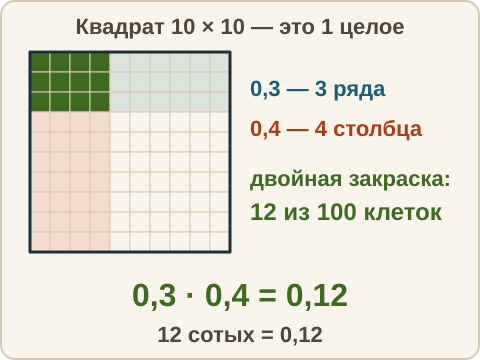
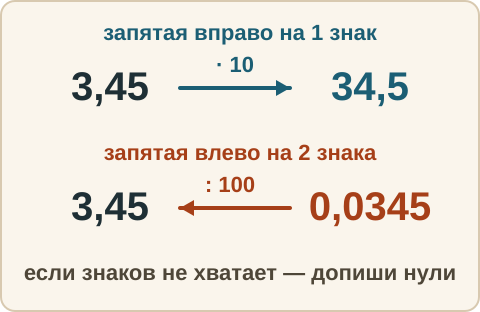
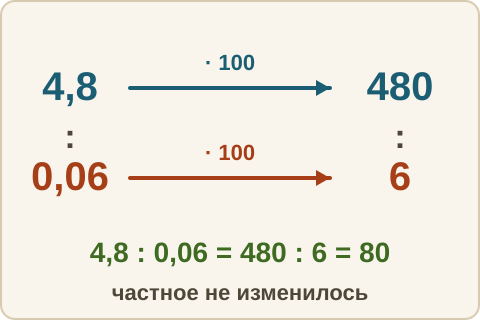
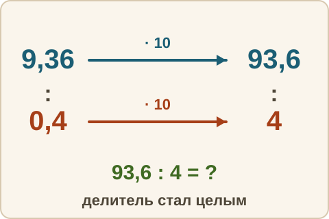

Математика: база · занятие 11Умножение и деление десятичных дробей
Цель: ты умножаешь и делишь десятичные дроби, правильно ставишь запятую, умножаешь и делишь на 10, 100, 1000 и на 0,1; 0,01. Это задание 6 ОГЭ. Ответы и подсказки спрятаны: сначала реши сам, потом нажми кнопку.
Как записывать ответ. Число — целое число. Дробь — через черту и сокращённая до конца, например 3/4. Смешанное число — целая часть, пробел, дробь, например 2 3/4. Десятичная дробь — с запятой, например 3,25. Знак — один символ: <, > или =.
Вспомнить
Без подсказок, сразу проверка. Отмечай, на чём споткнулся, — в журнал.
- 5,6 + 3,75
- 20 − 7,45
- 4,2 − 1,85
- 5/6 : 5/9
- Найди 3/4 от 36.
- 4/5 − 3/8
Беглость: сдвиг запятой
Игра «сдвиг запятой». Назови результат и скажи, куда и на сколько знаков ушла запятая. Ошибся — пример вернётся: попробуй ещё раз. Без таймера.
- 3,45 · 10
- 0,07 · 100
- 4,2 · 100
- 56 : 10 — десятичной дробью
- 3,9 : 100
- 0,5 · 1000
Правило
Умножение. Множители — числа, которые перемножают; произведение — результат умножения.
- Умножай как целые числа, запятые не замечай.
- В произведении отсчитай справа столько знаков после запятой, сколько их всего в обоих множителях.
Почему так. 0,3 · 0,4 = 3/10 · 4/10 = 12/100 = 0,12. В знаменателе 10 · 10 = 100, то есть два нуля — два знака.

Умножение и деление на 10, 100, 1000. При умножении запятая сдвигается вправо на столько знаков, сколько нулей в множителе; при делении — влево. Если знаков не хватает — дописывай нули. Например, 3,45 · 10 = 34,5, а 3,9 : 100 = 0,039. Умножить на 0,1 — то же, что разделить на 10; умножить на 0,01 — то же, что разделить на 100. Например, 47 · 0,1 = 4,7.

Деление на целое. Делимое — число, которое делят; делитель — число, на которое делят; частное — результат деления. Дели столбиком, как целые числа. Запятую в частном ставь тогда, когда «снесёшь» первую цифру после запятой. Например, 7,56 : 3 = 2,52.
Деление на десятичную дробь. Умножь делимое и делитель на 10, 100 и так далее так, чтобы делитель стал целым. Частное при этом не меняется (это основное свойство дроби), а делить на целое ты уже умеешь. Например, 4,8 : 0,06: умножаем оба числа на 100 и делим 480 : 6 = 80.

Из жизни. 1,5 кг яблок по 80 руб. за килограмм. Считаем 15 · 80 = 1200; в множителях всего один знак после запятой, значит, 120,0 = 120. Яблоки стоят 120 руб.
Разобранный пример
А. 2,5 · 0,6
- Умножаем как целые: 25 · 6 = 150. Знаков после запятой: 1 + 1 = 2.
- Отсчитываем два знака справа: 1,50 = 1,5.
- Ответ: 1,5.
Б. 1,2 · 0,35
- 12 · 35 = 420. Знаков: 1 + 2 = 3.
- Отсчитываем три знака справа: 0,420 = 0,42.
- Ответ: 0,42.
В. 4,8 : 0,06
- Делитель 0,06 — два знака после запятой. Умножаем оба числа на 100: 480 : 6 = 80.
- Ответ: 80. Проверка: 80 · 0,06 = 4,8.
С подсказкой
Решай сам. Подсказку открывай, только если застрял.
- 9,36 : 0,4

Сам
Столбиком или в уме, как удобнее. Два раза не сошлось — появится кнопка «Показать решение».
- 0,7 · 0,8
- 3,2 · 1,5
- 0,25 · 40
- 6,3 : 9
- 5,4 : 0,9
- 12 : 0,4
- 0,045 · 100
- 83 · 0,1
Ловушка
Ловушка. 0,3 · 0,4 = 1,2. Здесь запятую поставили «как при сложении»: один знак. Но при умножении знаки складываются: 1 + 1 = 2. Проверка прикидкой: 0,3 · 0,4 — это часть от 0,3, поэтому результат меньше 0,3. А 1,2 больше 1. Значит, ответ не сошёлся. Правильно: 0,12. Проверь себя: сколько знаков после запятой всего в обоих множителях?
Смесь
Вперемешку: десятичные и обыкновенные дроби, знаки. Это 9 заданий. Результат смотри в строке «Верно: N из 9» под заданиями.
- 0,6 · 0,5
- 3,1 + 2,95
- 8,4 : 0,7
- 5/9 · 3/10
- 7,5 − 2,64
- Знак: 0,08 и 0,1.
- 0,053 · 100
- 90 : 0,3
- 1 3/4 − 5/6
Журнал
Запиши 1–3 строки: «что перепутал → как проверить». Пример формы: «поставил запятую по числу знаков одного множителя → считаю знаки в обоих множителях и проверяю прикидкой». Там же отметь результат смеси из строки «Верно: N из 9».
- …